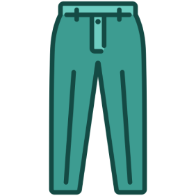

БРЮКИ

Если работодатель не имеет ничего против стиля
casual или smart casual, на роль повседневной офисной
одежды подойдет жакет, пуловер, свитер, кардиган с брюками классического кроя или джинсами темно-синего цвета
без потертостей и дыр.
Зимние шерстяные брюки на каждый день могут быть также темно-синего цвета либо черными и коричневыми.
В теплый сезон допустим более светлый цвет одежды. Деловой этикет не запрещает носить в офис
светло-серые, песочные, бежевые брюки из льна, хлопка с вискозой и подобных тканей. Но если в течение дня предстоят
важные встречи и переговоры, рекомендуется надевать деловой костюм или тонкие шерстяные брюки темного цвета и светлую рубашку
без рисунка с длинным рукавом – это правило для любого времени года.